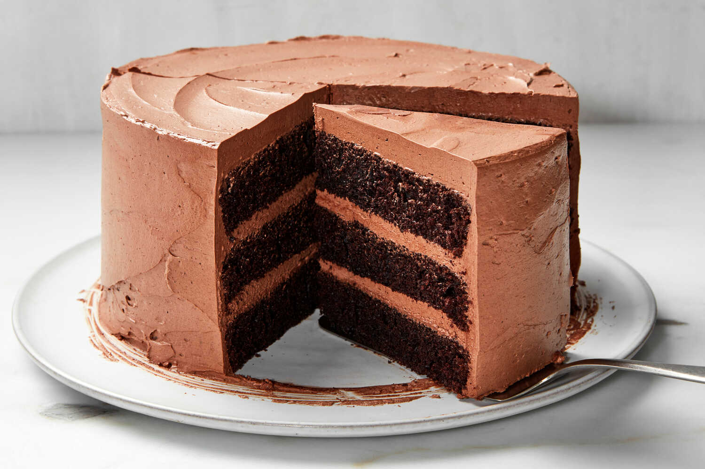
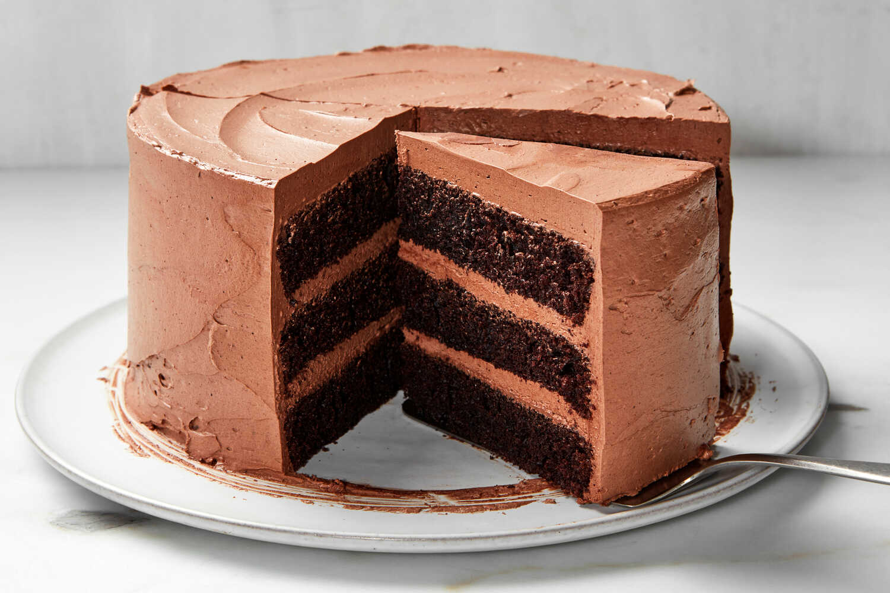

Ласкаво просимо до пекарні Смаколик!
Ми пропонуємо найсмачнішу та найсвіжішу випічку для всіх смаків та заходів. Перегляньте наші послуги, переконайтеся у нашій професійності та замовте улюблені смаколики прямо зараз!
Ми пропонуємо широкий асортимент свіжої випічки, приготованої з найкращих інгредієнтів.
У нас ви можете знайти:
- Хліб
- Торти
- Пироги
- Кекси
- Печиво
Про нас
Пекарня Смаколик - це свіжоспечені вироби з великою кількістю начинки, приготовані за домашнім рецептом з відкритим доступом до процесу приготування.
Відповідальне ставлення з одного боку, а любов до випічки з іншого, роблять нашу продукцію такою смачною та популярною.
Наші пекарі починають роботу коли місто ще спить, щоб рано вранці свіжа випічка з'явилася на прилавках. Висока кваліфікація нашої команди, найкраща сировина на ринку і традиційні технології випічки в поєднанні з сучасними рішеннями сприяють підвищенню якості нашої продукції.
З кожним пиріжком передаємо вдосконалені традиції. Будемо поруч біля тебе, де б ти не був.

Послуги
В пекарні Смаколик ми пропонуємо широкий вибір випічки для будь-яких смаків та заходів. Від хліба та булочок до різноманітних тістечок та тортів - ми маємо все, щоб задовольнити ваші кулінарні потреби. Наші вироби завжди свіжі та виготовлені з найкращих інгредієнтів.
Ми пропонуємо широкий спектр послуг, включаючи:
- Виготовлення тортів на замовлення
- Кейтеринг для заходів
- Доставка випічки додому
Торти
Ми готуємо торти для будь-яких свят та заходів. Від народження дитини до весілля - ми зробимо для вас особливий торт за вашим бажанням та смаком.
Зверніться до нас з вашими побажаннями та деталями, і наші майстри з радістю створять для вас найкращий торт!
Хліб
Наш хліб - це справжня домашня якість. Ми використовуємо тільки натуральні інгредієнти та традиційні рецепти, щоб забезпечити вам свіжий та смачний хліб кожного дня.
Ви можете обирати з широкого асортименту хліба, включаючи білі, ржані, цільнозернові та багато інших сортів. Переконайтеся сами в смакових якостях нашого хліба!
Ціни
Торт на замовлення
Вартість: $30
Опис: Спеціально приготовлений торт за вашим бажанням та смаком.
Кейтеринг для заходів
Вартість: $100
Опис: Послуга кейтерингу для будь-яких заходів з широким вибором випічки.
Доставка випічки додому
Вартість: $5
Опис: Зручна доставка нашої свіжої випічки прямо до вашого дому.
Фотогалерея
Подивіться нашу фотогалерею, щоб переконатися в смаковитості наших виробів. Від пишних тортів до хрустких булочок - кожне фото відображає нашу увагу до деталей та якість продукції, яку ми пропонуємо.
 


Контакти
Ми завжди раді почути від вас! Якщо у вас є питання або ви хочете зробити замовлення, будь ласка, зв'яжіться з нами за допомогою електронної пошти або телефону, вказаного нижче. Наші дружелюбні співробітники готові допомогти вам у будь-який час.
Адреса: вул. Пекарська, 10, м. Львів, 79000
Телефон: +380 123 456 789
Email: smakolyk.ua@gmail.com